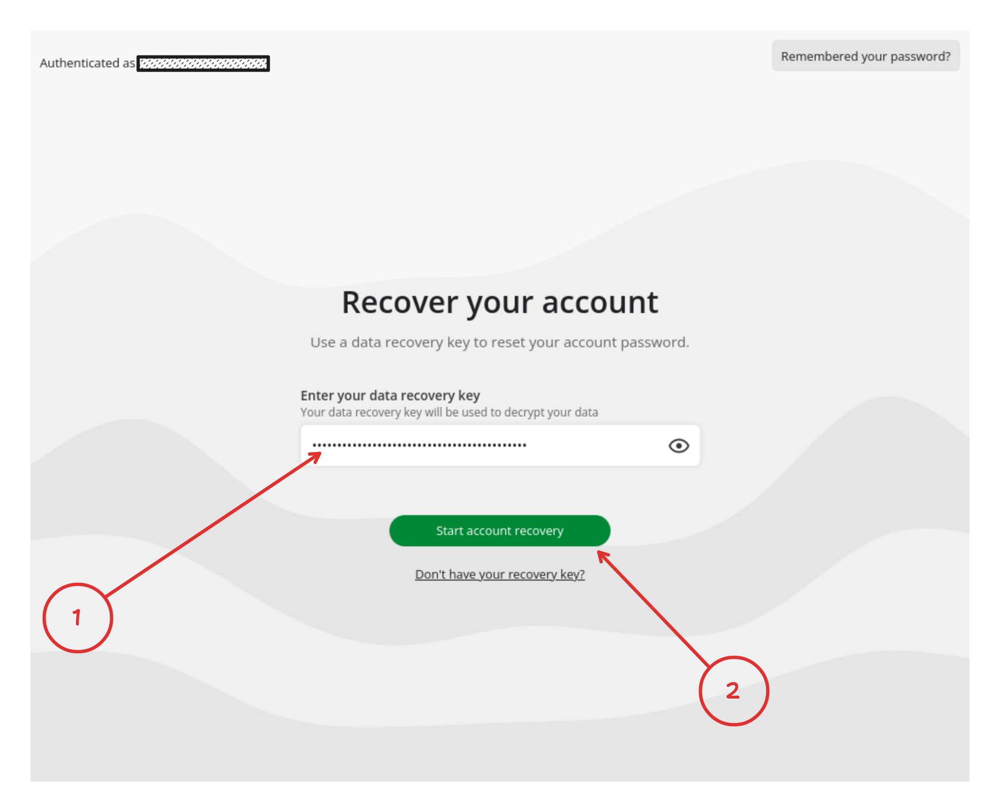
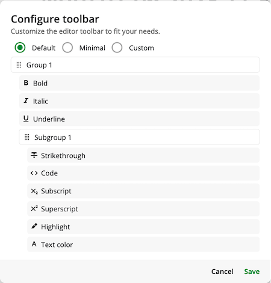

Notesnook 零知识加密的底层逻辑——服务器到底能看到什么
当一款笔记软件号称"零知识"时，它到底意味着什么？我把 Notesnook 的加密流程一层层拆开，从密钥体系到同步机制，看看这套设计的真正边界在哪里。
一个问题：当你在 Notesnook 里写笔记时，服务器在看什么
我第一次接触 Notesnook 时，最打动我的不是它那堆功能——富文本编辑、跨端同步、Monograph 发布——而是它在官网上那句直白的宣称：服务器永远看不到你的笔记内容。
这句话听起来像 marketing slogan，但仔细想下去，它背后藏着一串相当硬核的工程问题：你用什么加密？密钥放哪？同步时密文怎么传？服务器端到底能看到哪些元数据？零知识的边界在哪里？
我花了一段时间把这些问题挖到底，发现 Notesnook 这套设计有意思的地方不在于它用了什么前沿密码学——XChaCha20-Poly1305 和 Argon2i 都是成熟方案——而在于它如何在「用户体验」和「加密强度」之间做取舍，以及这套取舍对普通用户意味着什么。
三层密钥：把加密责任一层层往用户端推
Notesnook 的加密体系核心是三层密钥架构。理解了这三层，你就理解了它为什么敢说"零知识"。
最底层是数据加密密钥（DEK）。每条笔记在上传服务器之前，会先用一个独立的 DEK 加密。这个 DEK 是随机生成的，每次加密都换。加密用的是 XChaCha20-Poly1305——一种现代流密码加消息认证码的组合，简单说就是"保密性 + 完整性一把梭"，服务器拿到密文之后既打不开，也篡改不了。
中间层是主密钥。DEK 本身也不能裸着存，它是被主密钥加密之后才和笔记密文一起传到服务器的。主密钥来自你的账户密码，用 Argon2i 算法做了 key derivation——这个算法的设计初衷就是"让暴力破解变得很贵"，计算耗时和内存消耗都调得比较重，防的就是有人拿到密文后跑字典。
最顶层是恢复密钥。这是 Argon2i 的一个副产品：如果将来换了设备、忘了密码，恢复密钥可以让你在不知道原密码的情况下重新派生主密钥。但恢复密钥本身也是一段需要你自己妥善保管的字符串——Notesnook 服务器不存，恢复密钥的完整保管策略可以在notesnook文档里查到。

这套设计的妙处在于：服务器全程只见过密文和加密过的 DEK，从来没碰过真正的明文，也从来没碰过能解开明文的密钥。打个比方，就像你把一封信用自己锁扣好的信盒装起来交给快递员——快递员负责把盒子从 A 送到 B，但从头到尾看不到里面的信，也打不开那个锁。
同步机制：密文在网络上怎么走
笔记写完之后，按一下保存（或者它自动触发保存），Notesnook 客户端在本地做的事情是：序列化 → DEK 加密 → 把密文对象发到服务器。这个过程完全发生在你的设备上，服务器端只是接收到一串看起来毫无规律的字节流。
换个设备下载 Notesnook 并登录同一个账号时，反向流程：客户端先拉取所有密文条目，用本地存的主密钥解开那些加密过的 DEK，再用 DEK 解每条笔记。真正的解密只在用户端发生，服务器不参与、也没能力参与。
离线编辑呢？完全支持。没网的时候你照常写、照常改，所有变更先堆在本地。恢复网络后客户端自动把这些离线积累的变更重新加密上传。如果两台设备同时离线改了同一条笔记——Notesnook 不会覆盖任何一方，两份都保留并打上冲突标记，让你手动选或者合并。
那服务器到底能看到什么？我整理了一下：邮箱（登录验证用）、笔记的条目 ID 和时间戳（增量同步用）、密文本身、存储配额。看不到的是标题、正文、Notebook 归属、Tag 标签、Vault 锁定状态——这些全在加密数据里。
这个边界很重要。零知识不等于"服务器啥都不知道"，它的准确含义是：服务器知道的那些东西，不足以让它还原你的笔记内容。时间戳能用来推断你什么时候写的，但推断不了你写了什么。
Monograph 的独立加密：发布了也能保密
Notesnook 有个 Monograph 功能——把笔记发布成可分享的网页。有意思的是，发布出去的 Monograph 支持密码保护和自毁，而且这里用的是独立于主账户的加密密钥。
密码保护的 Monograph 打开时先弹密码框，输对了才显示内容。它的加密流程和主笔记一致（XChaCha20-Poly1305 + Argon2i），但密钥是单独生成的，不和你账户里的任何东西挂钩。Notesnook 服务器不存密码明文，也打不开受保护的 Monograph。
自毁更狠——只能被看一次，URL 立即失效，内容从服务器删除。适合发一次性验证码之类的东西。不过这里有个设计取舍：自毁不能和密码保护叠加。从工程角度想也合理——如果一个东西看一次就没了，再套一层密码保护意义不大，反而增加实现复杂度。
这套设计的代价是什么
说了这么多好处，得讲讲 Notesnook 这套加密架构的成本。
第一，用户必须自己保管密钥。Argon2i 虽然安全，但意味着你设了密码之后，如果忘了、也丢了恢复密钥——那就是真没了。没有客服能帮你找回，因为 Notesnook 自己也找不回。这是零知识的核心 trade-off：隐私和遗忘不可兼得。
第二，同步冲突处理是"最后写入胜出"加手动合并。两台设备同时改同一条笔记，Notesnook 不会自动帮你 merge，而是留两份让你自己选。这对单人使用问题不大，但如果你的工作流里频繁跨设备编辑同一条笔记，会有点烦。
第三，免费版有限制。Monograph 发布在免费版里会剥离链接和嵌入内容，工具栏自定义要 Pro 才能保存自定义布局——这些都是功能层面的 gating，和加密架构无关，但实际使用时能感受到边界。

适合谁、不适合谁
最后做个判断。Notesnook 的加密架构决定了它特别适合这几类人：对隐私有明确焦虑的知识工作者、有合规要求的团队成员、日常处理敏感文档的写作者——他们能接受"丢了就是真丢了"的代价，换回来的是真·零知识的隐私保护。
不太适合的场景：需要多人实时协作的团队笔记、要求找回密码的普通用户、习惯了云服务帮你做所有事的懒人——如果你连恢复密钥都懒得存，那零知识对你来说反而是个累赘。
用下来的感觉是，Notesnook 没有在加密这件事上玩噱头。它选的密码学方案都是经过时间检验的，密钥分层设计也是业内成熟范式。真正让我觉得有意思的是，它把这套加密体系做到了几乎不打扰日常使用——写笔记的时候你完全意识不到背后有三层密钥在工作，只有当你换设备登录、或者想发布 Monograph 的时候，才会想起"哦对，这玩意是真加密的"。
这可能是好的加密产品应该有的样子：安全藏在默认设置里，用户看不见，但它一直在那儿。
如果你想把这篇文章里提到的 Notesnook 相关资料完整收集起来，我在三个仓库都放了一份——GitHub 是主仓库，国内访问不方便时可以去 Gitee 或 GitCode 拉取，内容完全同步。